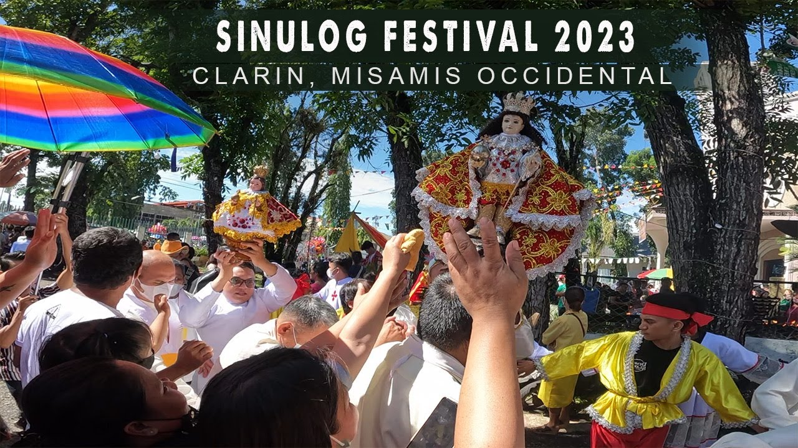
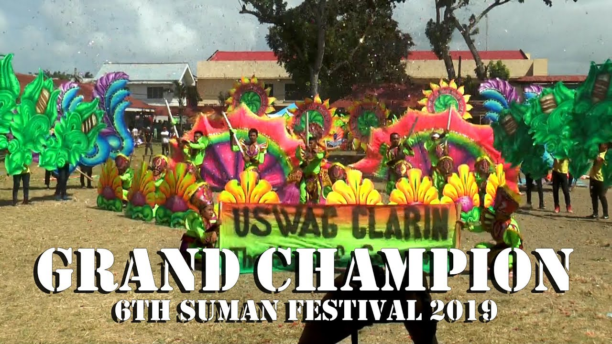
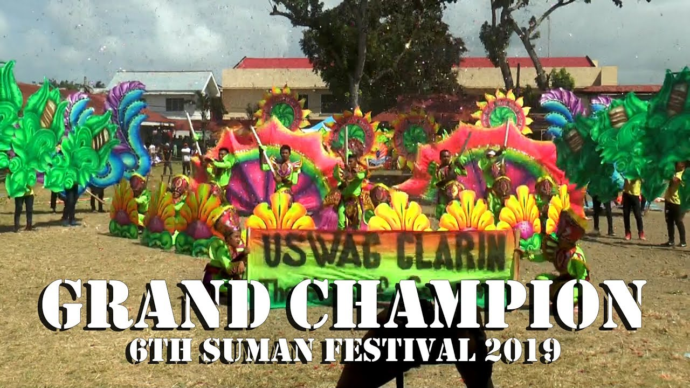

FESTIVALS IN CLARIN MISAMIS OCCIDENTAL
 

SUMAN FESTIVAL
If you visit Clarin in February, don't miss the Suman Festival.
Held from February 9th to 21st, this vibrant festival showcases
the city's famous produce, Suman. See colorful parades, street performances,
and cultural exhibits highlighting the importance of Suman in local culture.
SINULOG SA CLARIN
Join the energetic Sinulog sa his Clarin, a religious and cultural festival honoring Santo his Niño (Child Jesus).
Witness lively street dancing, captivating performances, and grand processions that celebrate the city's deep-seated faith and devotion.
As you explore Clarin, don't forget to interact with the warm and hospitable residents who respect the local customs and environment and
can give you helpful information and recommendations.